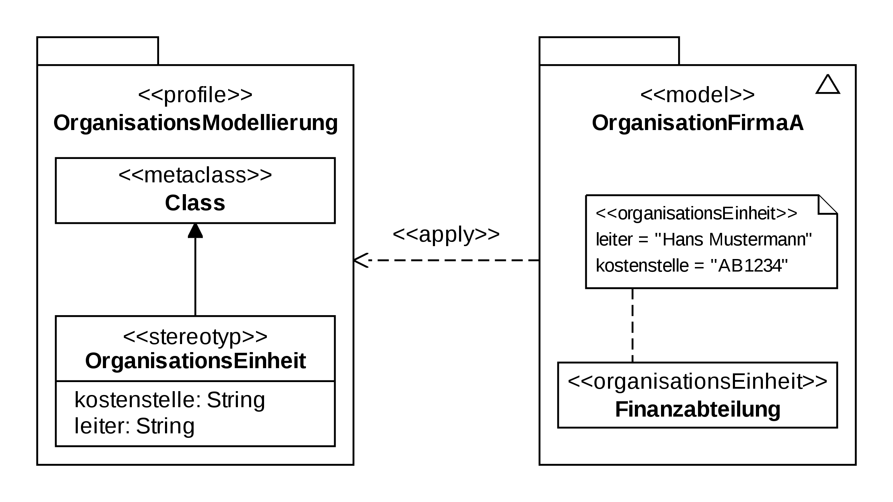

Diagramme de profils
Il permet l'utilisation de profils pour un métamodèle donné. Apparu avec UML 2.2, ce diagramme fournit une représentation des concepts utilisés dans la définition des profils (packages, stéréotypes, application de profils, etc.)1
Exemple
